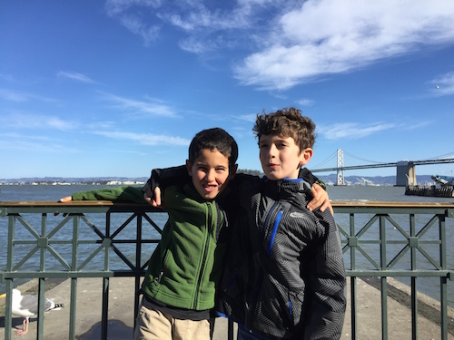
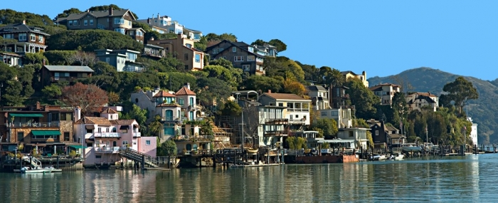

We woke up early in the morning, still on NY time a little. We had a great breakfast and my mom went to a work meeting with a drone company. (Cool!!) In the meanwhile, we took a walk outside and explored the area around our hotel in downtown SF. The weather was really cold, just like NY. We walked up some big hills in the city.
Soon, we met our cousins close to our hotel. Next we walked to the Ferry Building which has amazing places to eat, and great views of the bay. It was great to see and hang out with my cousin Ari! Next we took a ride on a cable car and saw many of the historic neighborhoods around SF.
In the late afternoon, we got dressed and went to see my parent's friend Ron Conway and his family in Tiburon over the Golden Gate Bridge. Ron is a well-known tech investor and philanthropist (he invested in Google AND Facebook!) He and his family were super kind and their house over the ocean was amazing! He showed us around his house. Afterwards, we had late dinner. Then, we watched a movie with Ron's grandkids in the home movie theater. So COOL! Later, we got back in our car back across the Golden Gate Bridge and back to our hotel for the night.
Ron Conway, Wikipedia